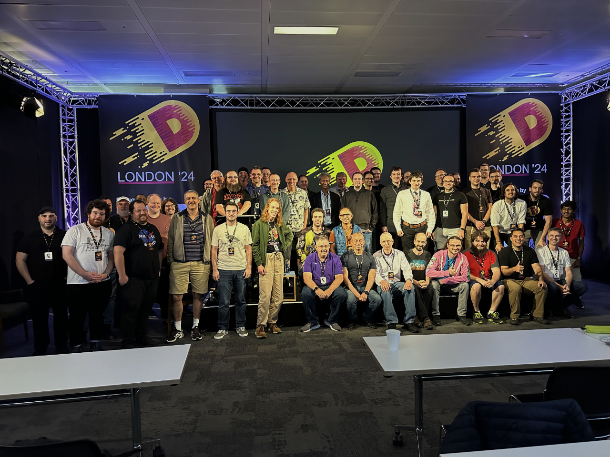

Since 2013, DConf has been the annual event bringing together D programming language enthusiasts and experts from across the globe for the rare opportunity to mingle offline in the real world. We enjoy interacting with each other online, but there's no substitute for the chance to share ideas face-to-face between conference talks, over dinner, or in a local pub.
Whether you’re a seasoned DConf veteran or joining us for the first time, we can’t wait to welcome you to London!

Group photo from DConf ’24
IMPORTANT: As of January 8, 2025, visitors to the UK from visa-exempt, non-European countries must apply for an Electronic Travel Authorization (ETA). This is required to enter the country. The application costs £10. A web search will result in several sites offering application services, but please do not use them. They will charge you an additional fee. Please visit the UK government's ETA Guidance page for instructions on how to apply
Call for Submissions
Coming up with an idea for a talk is as simple as the way you use D. Just look at your code, and it makes a presentation...
— Ali Çehreli, DConf Online 2020
We are currently accepting submissions for DConf ’25. If you have an idea for a talk, demo, or panel, don’t hesitate to submit it! We’re interested in anything and everything related to the D programming language. We will review all submissions submitted by May 4 AOE.
Never presented at a conference? Don’t let that stop you! Several D community members have given their first conference talks at DConf. Our community is always welcoming and ready to make you feel at home.
Not sure what to talk about? As Ali pointed out in one of his DConf Online 2020 Q&A sessions, if you’re using D now, you probably already have material for a potential talk.
If you need inspiration, visit the DConf ’24 Schedule to see what sort of talks were presented, then follow the links in the menu bar to past conferences for more. Any topic related to D is a potential talk, such as:
Language techniques enabled by the D programming language
Tools and techniques for maximizing productivity when working in D
Experience reports on using D in the real world, professionally or as a hobby
Under the hood looks at compiler and standard library implementation artifacts
Hot topics such as safe deterministic memory management, migrating from other languages, or community engagement
Deep dives into D projects, their APIs, architecture, and implementation details
Research reports by students doing research on or using the D language
Don't feel constrained in topic or format. Follow your inspiration where it leads and tell us about it!
Selection Criteria
Talks should be no longer than 40 minutes and no shorter than 25 minutes. Additionally, we will evaluate submissions according to the following criteria:
Relevance: Is the topic interesting to DConf attendees? Will coverage be beneficial? Is it building on tried and true ideas, or blazing new trails?
Coverage: Does the proposal cover the topic in depth? What are the main insights dispensed by the submission?
Organization: Is the submission well organized? Will the audience tune into the narrative?
Novelty and Originality: How new and noteworthy is the material? Previously published material is acceptable provided it hasn’t yet
reached a wide audience within the D community.
Bottom Line: What’s your session’s takeaway? How is it going to improve the attendees’ knowledge, outlook, and inspiration?
Submission Guidelines
We expect submissions in either plain text or Markdown. Please do not send PDF, DOCX, etc. All submissions should be directed to
social@dlang.org
and should include:
Abstract: the "elevator pitch" of the talk, in one paragraph
Extended Description: an extended abstract including any details you believe are relevant for evaluating the submission
Brief Speaker Biography: including a summary of the speaker’s expertise relative to the talk topic
We can’t wait to see what you send us!
Venue
Our DConf ’25 venue is CodeNode, a space in Central London specifically designed for tech conferences. It’s conveniently located close between Moorgate and Liverpool Street stations and is a 10–15 minute walk from Old Street Station to the north.
Our presentations will happen on the ground floor in the CTRL room, and we’ll have the entirety of the ESC area downstairs to ourselves, where attendees can relax, chat, or play table tennis or foosball between talks.
Accommodations
We advise you to book a hotel room early, as rates tend to go up the closer to your travel dates. If you want to attend but aren't yet certain you'll be able to, consider booking an option that allows refundable cancelation. That's usually more expensive, but better than giving up a refund if you can't make it.
There are several budget hotels in easy walking distance. The following are some options that, according to Google Maps, are less than a 20-minute walk from the venue. Some of them are near an underground station that is one stop away from Moorgate or Liverpool Street stations. Click a link to see the walking route(s) between a hotel and the venue. On the map, you’ll find links to reserve a room. Note that most attendees generally stay at the Travelodge London Central City Road.
Every evening during the first three nights of DConf means only one thing: BeerConf! Ethan Watson coined the term in 2016 for our evening gatherings in a designated spot at every DConf. We've sometimes been able to hire pub space for BeerConf and sometimes have had to gather at a local hotel.
As of now, all three nights of BeerConf for DConf ’25 are to be located at the Travelodge Central City Road a short walk north of the venue. If we are able to obtain funding to hire space at a pub, we'll post an announcement in the D Forums and update this page.
DConf ’25 is hosted by our friends at Symmetry Investments. With offices in Hong Kong, Singapore, London, Jersey, and the Cayman Islands, Symmetry employs D in their investment management mission. This is the fifth time they’ve sponsored DConf, and we are thankful for their continued support. They are also the sponsors of the Symmetry Autumn of Code, an annual event that, since 2018, has provided experience to emerging programmers while enhancing the D ecosystem. We couldn’t be more excited to bring DConf to London once again with Symmetry’s support.